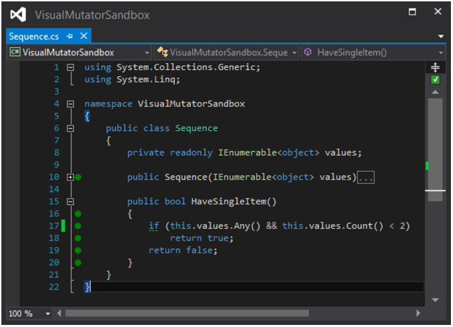
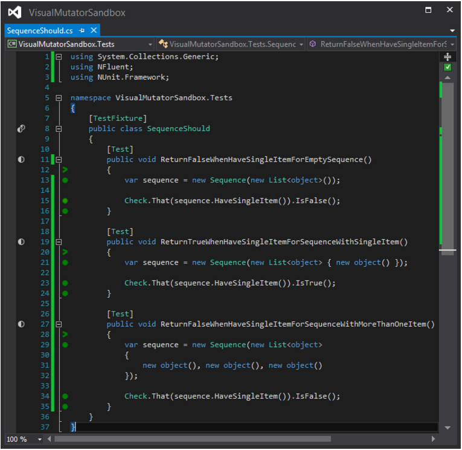
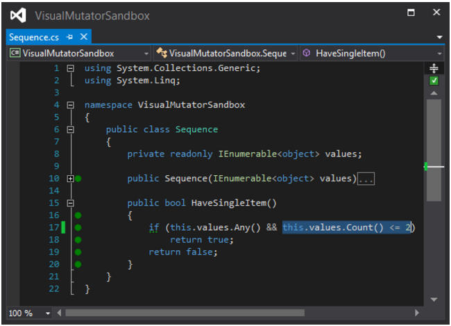
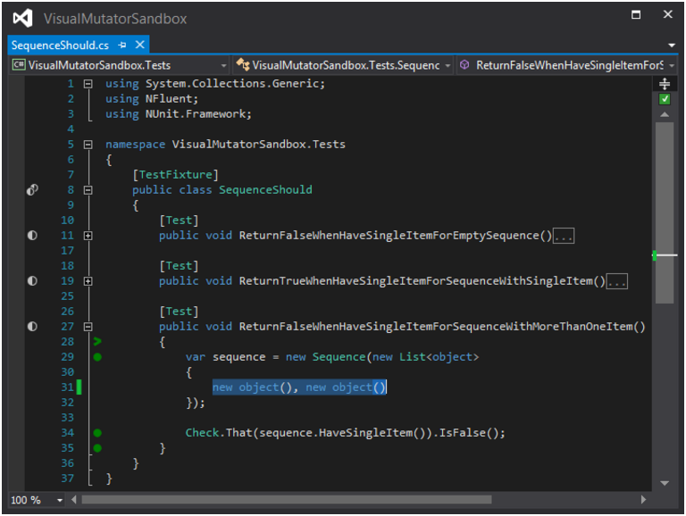
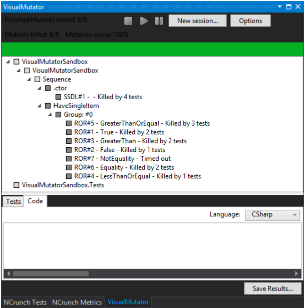

LE MUTATION TESTING
Jul 26, 2016
J’ai récemment lu un article de l’oncle Bob Martin, il y expose sa découverte du mutation testing et semble très enthousiaste à ce sujet. J’ai donc décidé d’essayer un outil pour mieux comprendre cette démarche.
LE PRINCIPE
Aujourd’hui, beaucoup de projets sont réalisés en appliquant le TDD. Développer en appliquant le test first permet d’être sûr que l’on écrit uniquement le code nécessaire pour rendre un test valide.
Cependant, certains reprochent à cette méthode de mettre en évidence la présence de bugs, et non de démontrer l’absence de bug : un test qui échoue montre qu’il y a une anomalie, mais une anomalie peut exister sans qu’il n’y ait de test pour le montrer.
L’idée du mutation testing est de créer des mutations sur le code testé. Un outil analyse le code couvert par les tests puis génère des mutants : Mes tests sont-ils toujours vrais si je modifie cette condition ? Et si je ne fais pas d’appel à cette fonction ? Un mutant peut avoir deux états : mort ou vivant.
Les mutations peuvent prendre diverses formes : la modification d’une limite conditionnelle (< devient <=), l’inversion d’une condition (== devient !=), la suppression d’un appel à une méthode, etc.
Un mutant mort montre qu’au moins un test échoue si l’on modifie le code, on peut donc en déduire que les tests protègent bien le code contre les régressions. Un mutant vivant montre que tous les tests passent malgré une modification du code. Le mutation testing peut ainsi révéler que le code est mal protégé contre les régressions, il peut s’agir d’un problème de design ou alors c’est la qualité des tests qui peut être remise en cause.
EXEMPLE
Pour mon exemple, j’utilise VisualMutator qui s’intègre directement dans visual studio.
CAS INITIAL
Ici, je teste de manière laxiste une simple méthode qui me dit si mon objet Sequence contient un seul élément. Voici une première solution :


MUTATIONS
Après une première session de mutation sur mon code on constate des faiblesses dans mes tests :

Le mutant LessThanOrEqual me montre que je peux modifier ma condition tout en gardant mes tests valides. Je le constate bien si j’applique cette modification (< 2 devient <= 2).

Je peux ici rejeter la faute à mon dernier test qui fournit une liste de trois objets. Une fois corrigé je peux relancer un test par mutation :


On constate bien cette fois que la mutation LessThanOrEqual n’est plus vivante. Mais cette fois ci le mutant NotEquality reste vivant, il me manque donc clairement un test.

Cette fois ci je constate que mes mutants LessThanOrEqual et NotEquality sont tous les deux tués par mes tests.

L’UTILITÉ
Cette approche est clairement faite pour tester la robustesse des tests plus que le code en lui même. Elle permet de mettre en évidence les limites de notre jeu de tests, et ainsi la présence de potentielles anomalies non identifiées. En d’autres termes : Est-ce que je peux faire confiance à mes tests ?
Je ne suis donc pas convaincu que le mutation testing apporte une grande plus-value si le TDD est appliqué avec rigueur. J’avoue ne pas avoir su produire de mutant vivant sur un premier exemple écrit de cette manière.
Cette approche est donc beaucoup plus intéressante pour la gestion de legacy. Avant d’y apporter des modifications, mieux vaut écrire des tests pour se protéger contre les régressions. N’importe quel développeur ayant réalisé cet exercice sait qu’il s’agit d’une tâche complexe et qu’il est parfois difficile d’identifier tous les cas gérés. Utiliser le mutation testing peut facilement mettre en évidence ces cas non identifiés.
L’INCONVÉNIENT
Il faut tout de même avoir conscience que cette méthode se révèle extrêmement coûteuse comparée à de simples tests unitaires. Il faut considérer le temps passé à l’analyse du code, à la génération des mutants, ainsi qu’à l’exécution des tests pour chaque mutant, ce qui peut prendre plusieurs heures sur un projet conséquent.
De manière grossière, imaginons un projet de 200 classes avec en moyenne 5 mutants par classe et un jeu de tests complet qui est exécuté en 30 secondes. On obtient :
200 * 5 * 0.5 = 8h20 (500 minutes)
Les tests utilisant la mutation ne peuvent donc pas être joués de manière systématique comme le sont les TUs. Il est selon moi beaucoup plus intéressant de l’appliquer de manière ponctuelle sur des régions ciblées du code.
Merci à Nadège pour sa relecture.